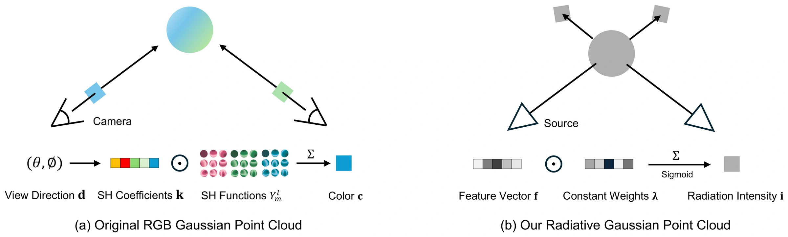
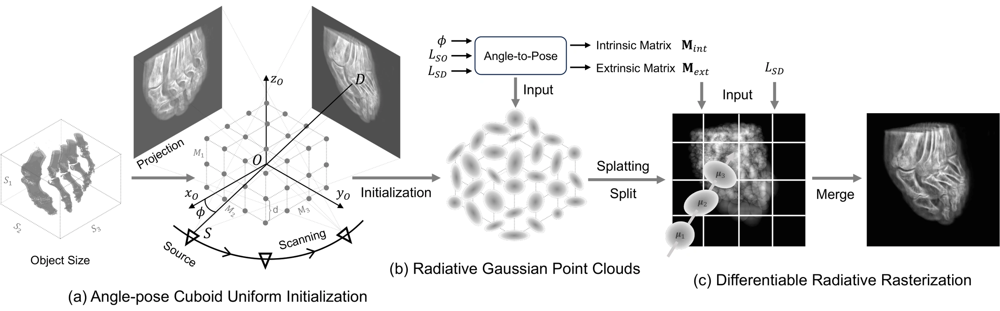
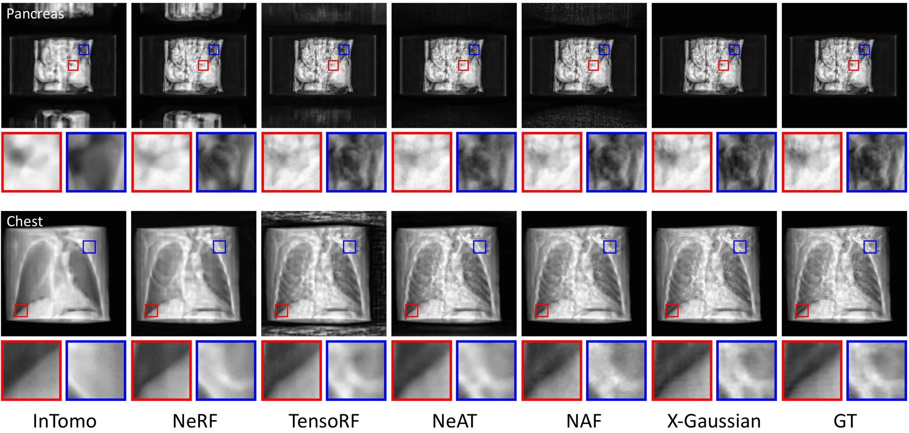
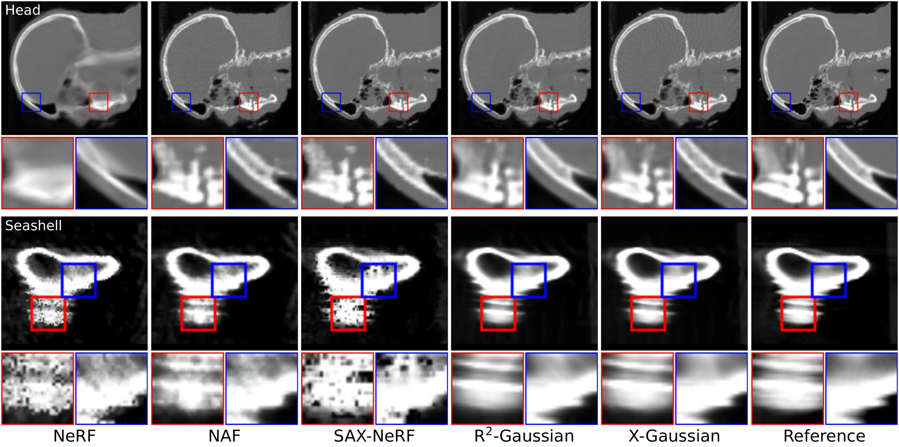

Unable to load mesh.
Interactive CT Volume
Drag to rotate · Scroll or pinch to zoom · Light gray meshes with 50% opacity
Unable to load mesh.
Foot
Interactive X-ray ViewerUnable to load mesh.
Head
Interactive X-ray ViewerUnable to load mesh.
Abdomen
Interactive X-ray ViewerUnable to load mesh.
Pancreas
Interactive X-ray ViewerUnable to load mesh.
Pine
Interactive X-ray ViewerUnable to load mesh.
Seashell
Interactive X-ray ViewerUnable to load mesh.
Walnut
Interactive X-ray ViewerCT Reconstruction During Optimization
Abstract
X-ray is widely applied for transmission imaging due to its stronger penetration than natural light. When rendering novel view X-ray projections, existing methods mainly based on NeRF suffer from long training time and slow inference speed. In this paper, we propose a 3D Gaussian splatting-based method, namely X-Gaussian, for X-ray novel view synthesis and direct CT reconstruction. Firstly, we redesign a radiative Gaussian point cloud model inspired by the isotropic nature of X-ray imaging. Our model excludes the influence of view direction when learning to predict the radiation intensity of 3D points. Based on this model, we develop a Differentiable Radiative Rasterization (DRR) with CUDA implementation. Secondly, we formulate a principled Radiative Gaussian Volume Querying (RGVQ) method that defines a continuous attenuation field from the original radiative point attributes and enables direct CT volume reconstruction through CUDA-based parallel querying, extending conventional 3DGS beyond image rendering. Thirdly, we customize an Angle-pose Cuboid Uniform Initialization (ACUI) strategy that directly uses the parameters of the X-ray scanner to compute the camera information and then uniformly samples point positions within a cuboid enclosing the scanned object. On X-ray novel view synthesis, experiments show that our X-Gaussian outperforms state-of-the-art (SOTA) methods by 6.5 dB while enjoying less than 15% training time and over 73× inference speed. For direct CT reconstruction, X-Gaussian outperforms SOTA methods by 0.40 dB and 4.34 dB in average 3D PSNR on synthetic and real scenes, respectively, while achieving 4.30× faster inference of the learned CT volume on average. Code, models, and datasets are at github.com/caiyuanhao1998/X-Gaussian
Method Overview
X-Gaussian comprises three key techniques for efficient X-ray projection rendering and direct CT reconstruction.
Radiative Gaussian Point Clouds and DRR
Our radiative Gaussian point cloud model fits view-independent radiation intensity through a Radiation Intensity Response Function (RIRF). A CUDA-based Differentiable Radiative Rasterization (DRR) renders novel X-ray projections from these points.

Radiative Gaussian Volume Querying (RGVQ)
Conventional 3DGS is designed for image synthesis and does not directly define a queryable CT attenuation field. RGVQ derives positive attenuation coefficients from the existing radiative features and opacities, and sums Gaussian contributions into a continuous field. Here, ρi is the product of opacity and positive radiative intensity. CUDA-based parallel querying at voxel centers directly reconstructs the CT volume without additional learnable point attributes.
V(x) = ∑i ρi exp[−½(x − μi)TΣi−1(x − μi)]
Angle-pose Cuboid Uniform Initialization (ACUI)
For X-ray novel view synthesis, ACUI computes camera calibration from scanner geometry and uniformly samples point centers in a cuboid enclosing the scanned object, avoiding structure-from-motion. The direct CT variant uses initialization reconstructed from training projections.

X-ray Novel View Synthesis
Compared with NAF, X-Gaussian improves average PSNR by 6.5 dB while achieving 73× inference speed and requiring less than 15% of the training time in the original NVS experiments.

Direct 3D CT Reconstruction
From 50 projections, X-Gaussian reaches 33.25 dB average 3D PSNR on five synthetic scenes and 39.53 dB on three real scans, improving over SAX-NeRF by 0.40 dB and 4.34 dB, respectively. Complete CT volume inference is 4.30× faster on average on the same RTX A5000.
| Synthetic Scenes | Real Scenes | |||||||||
|---|---|---|---|---|---|---|---|---|---|---|
| Method | Chest | Foot | Head | Abdomen | Pancreas | Average | Pine | Seashell | Walnut | Average |
| NeRF | 33.9110.9266 | 30.2060.8387 | 31.7600.9007 | 30.4350.8326 | 18.8080.8471 | 29.0240.8691 | 36.7660.8547 | 36.2250.7999 | 30.7790.5133 | 34.5900.7226 |
| NAF | 32.5920.9202 | 31.7740.8782 | 36.9940.9426 | 34.3710.8836 | 19.4340.6599 | 31.0330.8569 | 40.4590.9264 | 40.5210.9275 | 32.4400.6584 | 37.8070.8374 |
| SAX-NeRF | 34.3590.9378 | 32.2460.8883 | 39.6990.9714 | 34.9950.9004 | 22.9490.9349 | 32.8500.9266 | 37.3030.9168 | 37.0180.9321 | 31.2450.6701 | 35.1880.8396 |
| R²-Gaussian | 33.6010.9427 | 32.0220.8799 | 39.9440.9763 | 33.4980.8931 | 21.8080.8577 | 32.1750.9099 | 41.3700.9454 | 43.4260.9616 | 32.1740.7082 | 38.9900.8717 |
| X-Gaussian | 36.0010.9391 | 32.1810.8815 | 41.4380.9768 | 34.2700.8946 | 22.3780.8791 | 33.2540.9142 | 41.7980.9465 | 44.0080.9638 | 32.7690.7169 | 39.5250.8757 |
PSNR (dB, upper) / SSIM (lower). Best and second-best entries are bold and underlined. Real scans are evaluated against full-view FDK pseudo-references. Inference timing includes coordinate generation, volume querying and CPU transfer, excluding model loading and disk writing.

BibTeX
@inproceedings{x_gaussian,
title={Radiative gaussian splatting for efficient x-ray novel view synthesis},
author={Yuanhao Cai and Yixun Liang and Jiahao Wang and Yulun Zhang and Xiaokang Yang and Zongwei Zhou and Alan Yuille},
booktitle={ECCV},
year={2024}
}